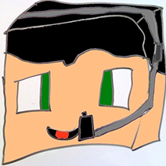

Однажды один окрок начал выживать с друзьями, и начали они с мира Dasty fermer. Развивались и играли на нем очень долго пока им не надоело. ВТОРО!Й МИР — это тот самый мир, который первый сдох от страшного напасти хиробрина — он превысил 1000 мб. После мы очень долго были в печали, ведь вложили мы со Славиком много сил на тот период. ТРЕТЬЙ МИР — это Very он объединял разных любителей строить дома 14 на 88 блоков в общем самая запоминающая постройка был ГИГАНСКИЙ ЛАВАКАСТ. Причина потери этого мира не хиробрин, с его могучей силой заполнять мир резиновыми пенисами, а просто усталость и выгорание других участников! ЧЕТВЕРТЫЙ МИР — плоская пустыня, служил он нам долго. На нем произошло много чего интересного от войны с Венчиком до самого большого хоруса. Самая большая постройка — Собор ОМАРА. Сдох он по причине по которой откинулся тот самый мир. Больше всего было обидно из за того что мы знали если загружать чанков на 1000 мб то хиробрин удалит наш мир! И все равно это не помогло в один прекрасный день амиль отправился за деревом и показатель объема мира превысил 1000 мб.

изначально этот мир был создан на легаси издании PS4, поэтому на спавне в радиусе 256 блоков крутая генерация.
Первопроходцы этого мира — их было четверо:
Павел — основатель мира
Дмитрий — строитель
Амиль — первый нашел крепость края
Слава — основатель самого большого города на мире "Нижнего залупинска"